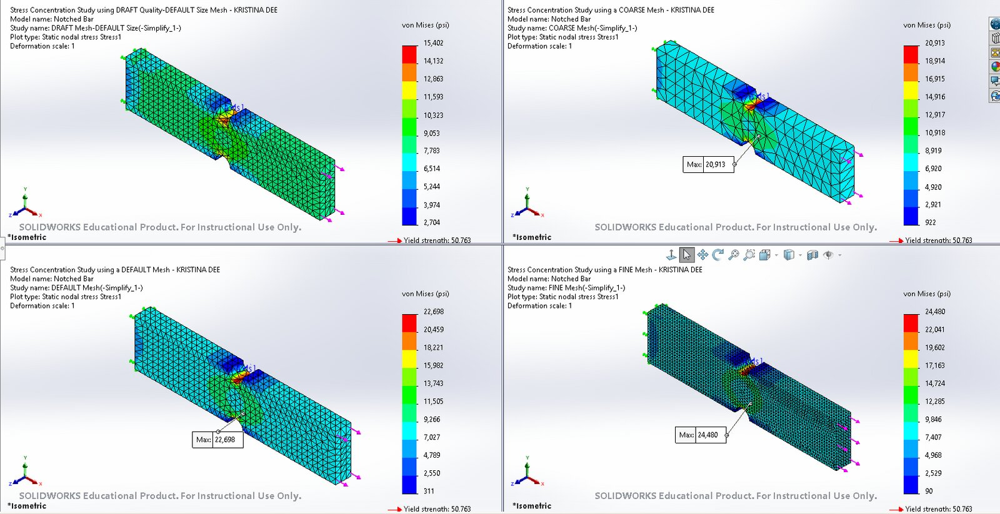
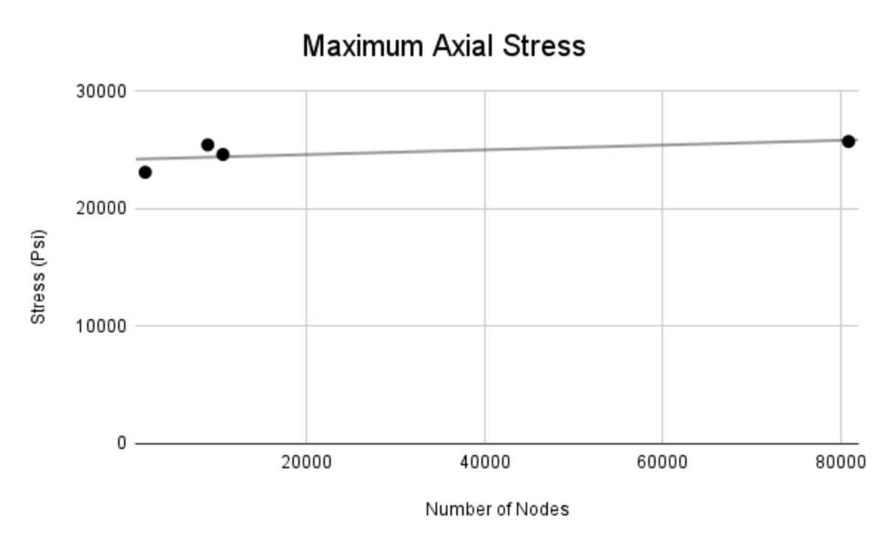
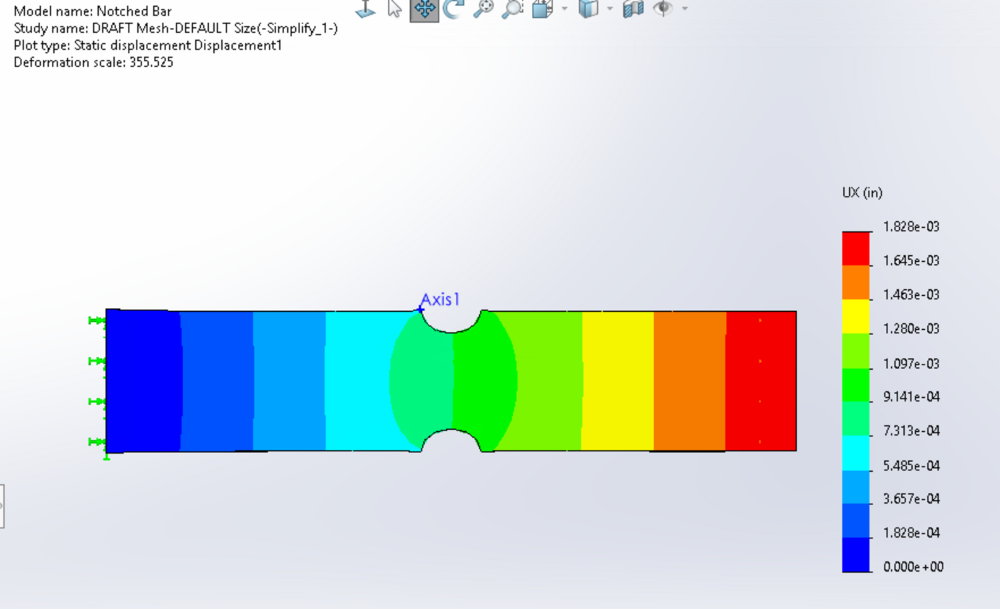
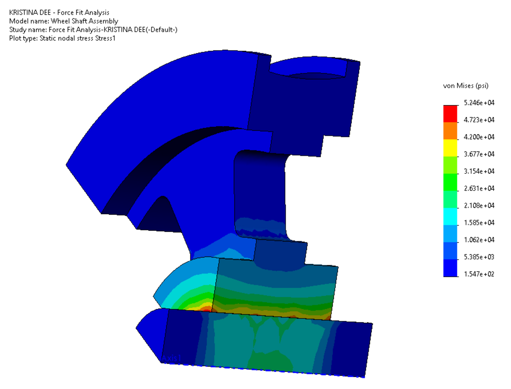
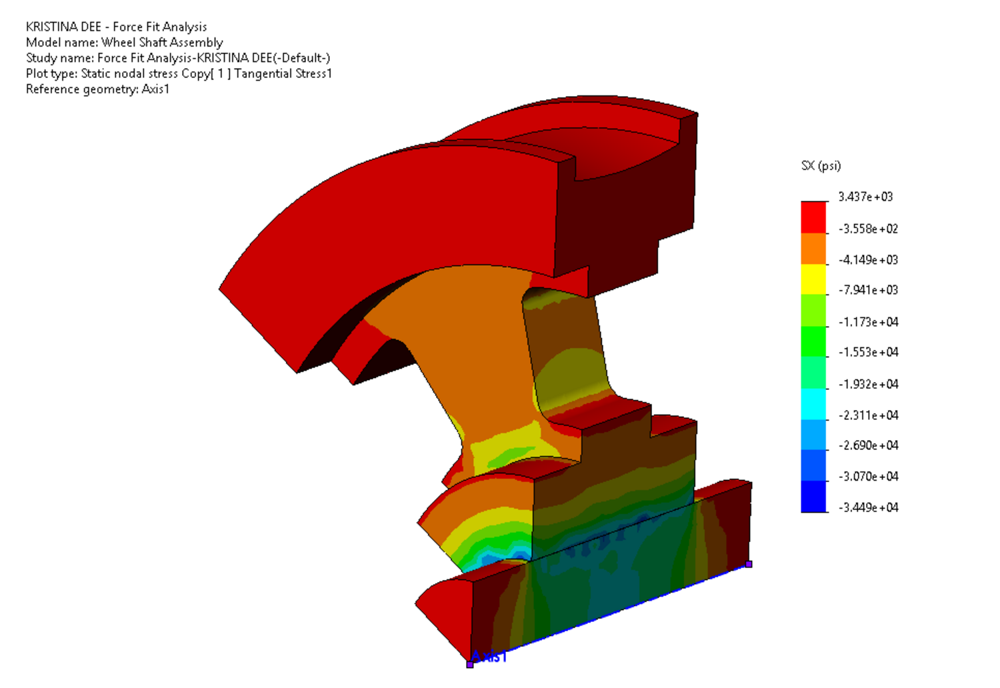
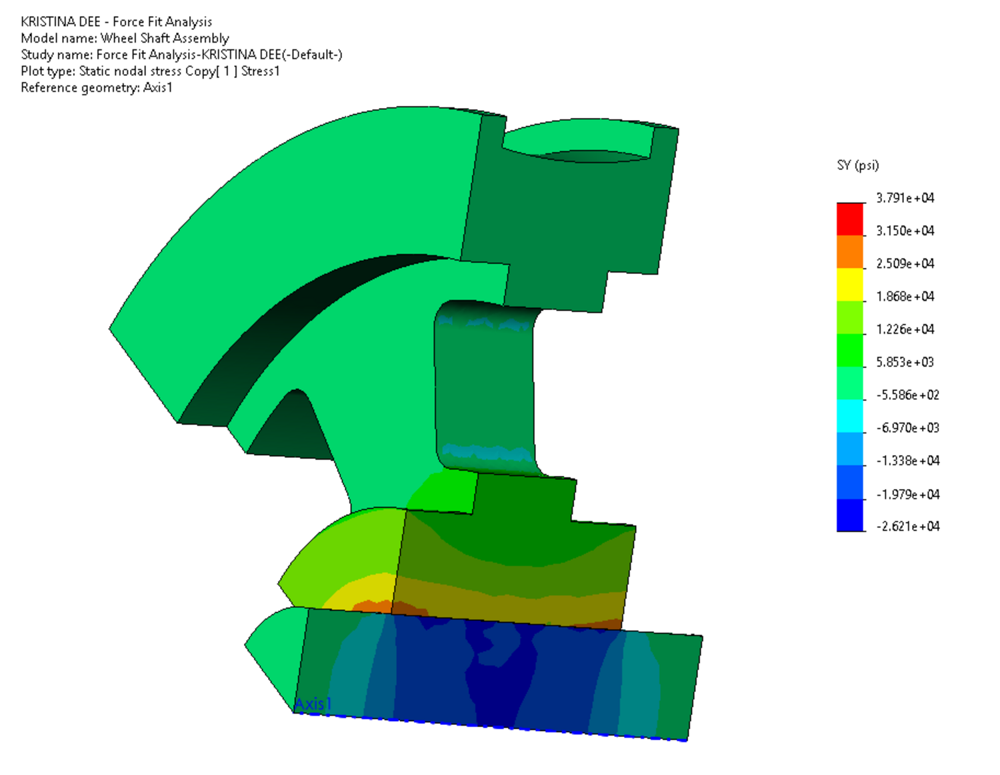
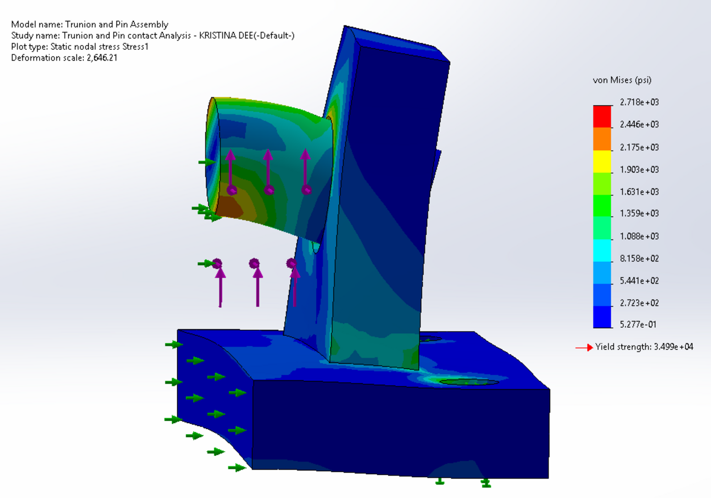
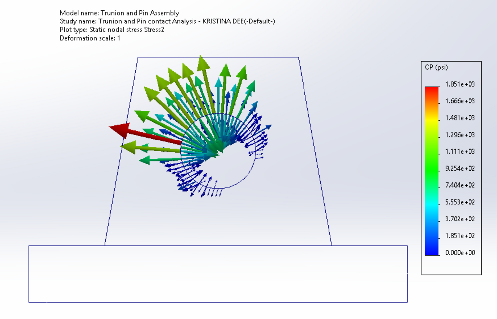
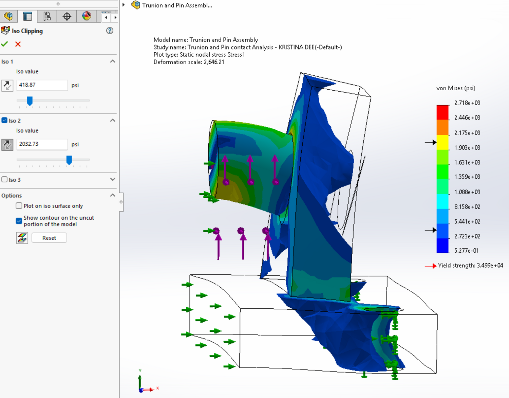

FEA studies
Three structural analyses from coursework — a stress concentration, an interference fit, and a contact problem — each run as a verification exercise rather than a single answer.
Stress concentration in a notched bar

An axially loaded bar with a machined notch, meshed four ways to see how the reported peak stress depends on discretization. The stress contours look almost identical across all four — the qualitative answer is stable from the first run — but the number at the notch root changes by nearly 60% between the draft and fine meshes.
That gap is the point of the exercise. A stress concentration is where a coarse mesh is least trustworthy, and the convergence trend is still rising at the finest mesh rather than flattening, so this solution is not grid independent. Quoting the fine-mesh number as the peak stress would be reporting the mesh rather than the part. Against a 50,763 psi yield strength all four results sit well inside the elastic range, so the design conclusion survives the uncertainty — but that is a separate claim from the stress being converged.


Interference fit: wheel and shaft

A press fit between a wheel hub and its shaft, where the interference itself generates the load. The useful output is the contact pressure at the interface, which sets both the torque the joint can carry and the hoop stress the hub has to survive during assembly.
The contours show where that pressure concentrates: highest at the bore and falling off through the hub wall, with the hoop stress distributed around the rim rather than localized. That distribution is the thing a bonded-contact assumption would miss entirely.


Contact analysis: trunnion and pin

A pinned trunnion joint, where load transfers through a contact interface rather than a bonded one. The contact pressure distribution — peaking around 1,851 psi at the bore — is the result that matters, because it is what a bonded-contact shortcut would get wrong. Peak von Mises reaches 2,718 psi against a 34,990 psi yield.


A note on these
These are course exercises rather than design studies, and they are here to show method rather than outcome — how the mesh was chosen, what the load path is, and whether the answer can be trusted. The common thread across all three is treating a result as a claim that has to survive a convergence check, not as a number the solver handed over.
- Work
- Individual
- Tools
- SolidWorks Simulation
- Studies
- Static, interference fit, contact